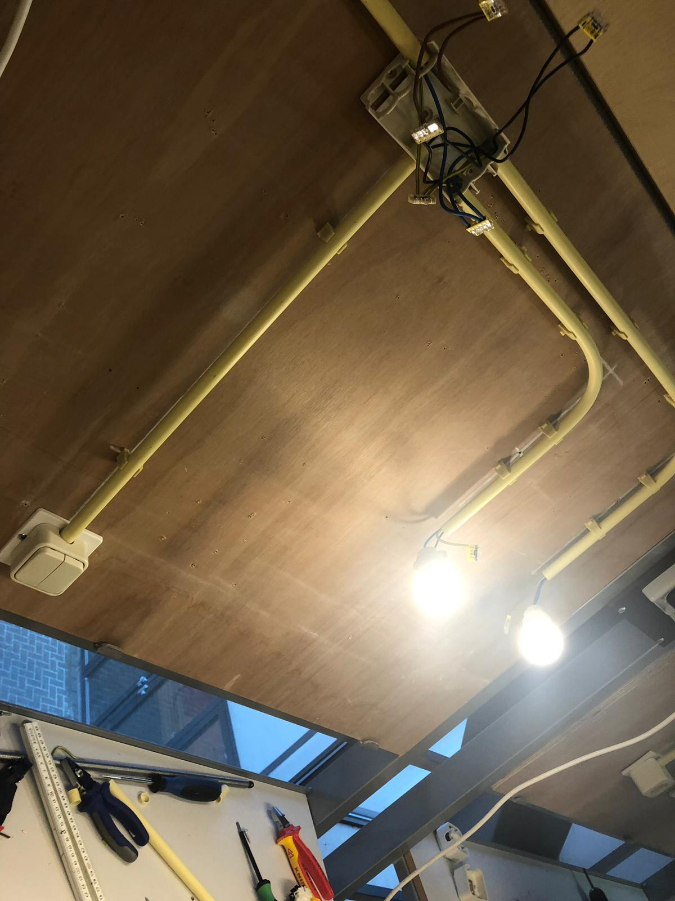

Mijn VoorOpleidingen
Mijn vooropleiding die ik heb gedaan is op het stedelijk dalton lyceum in de sector techniek, Ik heb daar electrotechniek gehad,metaal bewerken,3d tekenen,lassen,pneumatiek en sanitaire techniek. ik heb daar geleerd om met electriciteit te werken en om dingen te monteren.bij pneumatiek heb ik geleerd om verschillende werkingen te maken voor verschillende doeleinden zoals een hefboom of een scheider te maken voor een loopband.bij sanitaire techniek heb ik geleerd om een kachel aan te sluiten.bij 3D tekenen heb ik geleerd om een sleutel te maken voor een kastje
hier had ik een serieschakeling gemaakt die ik moest monteren binnen 120 minuten (2 uur).
in deze sector heb ik wel veel geleerd om dingen te monteren, eerst vond ik er niks aan maar het begon later pas interresant te worden nadat we elektro techniek gingen mixen met programeren met een plc schakeling.
ik heb in die 2 jaar in het sector techniek heel veel gedaan zoals metaal bwereken,lassen en sanitaire techniek maar helaas heb ik daar ook geen fotos of videos van kunnen vinden.
wat ik met die opleiding kan toepassen aan deze opleiding is vrij weinig want als ao werk je niet met metaal :D